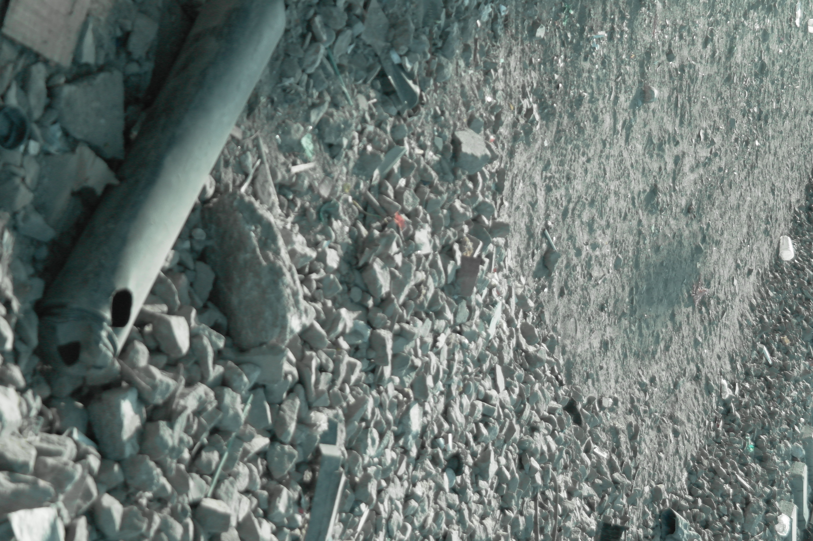
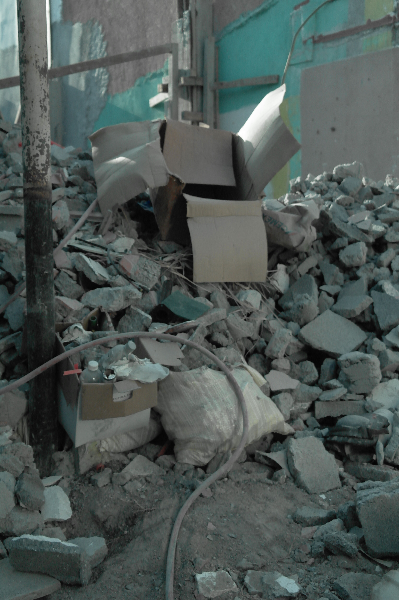
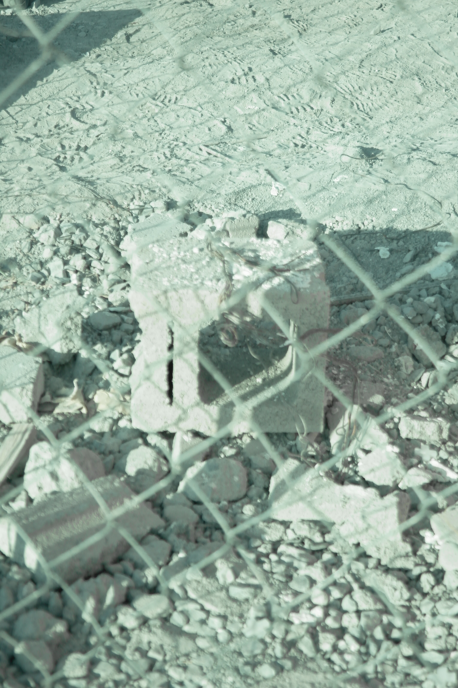

Crear conciencia sobre la importancia de reducir, reutilizar y reciclar los residuos de construcción, mostrando cómo estos desechos afectan al medio ambiente y promoviendo prácticas responsables para mantener espacios más limpios y sostenibles.
Concientizar
Reducir impacto
Promover acción
Descripción de la comunidad
Avenida Edison es una zona con obras y remodelaciones frecuentes. Se observan acumulaciones de escombros en espacios públicos y privados que generan inconvenientes.
Testimonio en audioEntrevista realizada a la comunidad.
Registro de observación
Conteo y transformación de residuos detectados en campo
Tipo de residuo o situación observada
Cantidad aprox. (número)
Transformación observada
Plástico
18
Acumulación
Varilla
23
Reutilización
Piedra
56
Acumulación
Arena
15
Acumulación
Papel
8
Combustión
Orgánico
6
Acumulación
Gráfica de materiales observados
Comparación de las cantidades aproximadas registradas.
18
Plástico
23
Varilla
56
Piedra
15
Arena
8
Papel
6
Orgánico
Galería
Imágenes de registro y video



▶
Residuos de Construcción
¿Qué sucede, dónde ocurre y por qué es un problema?
Materiales resultantes de construir, reparar, remodelar, excavar o demoler.
¿Qué sucede?
Las obras generan escombros.
Si no se separan, recolectan ni llevan a sitios autorizados, se acumulan en calles, terrenos baldíos, barrancas, zonas naturales o cerca de cuerpos de agua.
¿Dónde ocurre?
En viviendas, edificios, calles, carreteras, infraestructura, remodelaciones y demoliciones.
También en depósitos clandestinos. En México, los RCD son residuos de manejo especial.
¿Por qué es un problema?
Contaminan suelo, agua y aire. Afectan plantas y animales.
Obstruyen drenajes y aumentan riesgo de inundaciones. Desperdician materiales aprovechables.
Soluciones
Separar desde la obra
Reutilizar, reciclar y reducir
Llevar a sitios autorizados
ConstrucciónResiduosTransporteDisposición
Reducir, reutilizar y reciclar los residuos de construcción ayuda a proteger nuestra comunidad y el medio ambiente.
Código QR
Escanea el código para llegar directo a la ubicación del punto de observación en Avenida Edison.
Ubicación del sitio
Ábrelo desde la cámara de tu celular o toca el botón para abrir el mapa directamente.
Los escombros de las construcciones nos rodean todos los días: un montón de ladrillos en una esquina, un saco de cemento roto, restos de azulejos o varillas oxidadas. Con tanta prisa, muchas veces los vemos simplemente como basura molesta o terminamos por ignorarlos.
El problema real nace de la desinformación. Al no saber qué hacer con ellos o dónde llevarlos, se terminan acumulando en tiraderos clandestinos, contaminando el suelo que pisamos, el aire que respiramos y el agua de nuestros ríos.
La buena noticia es que gran parte de estos materiales aún tienen vida útil. Ese pedazo de concreto o esa madera no son el final del camino; pueden transformarse, reusarse y convertirse en la base de algo nuevo sin necesidad de seguir explotando la naturaleza.
No necesitamos soluciones gigantes de la noche a la mañana. Con pequeñas acciones informadas en nuestras obras o remodelaciones (empezando por separar lo que sirve de lo que no) podemos marcar una diferencia gigantesca para nuestra comunidad y para las familias que la habitan.
Propuestas de Acción
1
Separar los residuos desde el origen
Clasificar madera, metales, concreto, vidrio, plástico y residuos peligrosos desde el lugar donde se generan.
2
Reutilizar materiales
Aprovechar piezas de madera, ladrillos, concreto, tuberías y otros materiales que todavía puedan utilizarse en la misma obra o en otros proyectos.
3
Reducir el desperdicio de materiales
Planificar correctamente las cantidades necesarias y realizar cortes precisos para evitar sobrantes innecesarios.